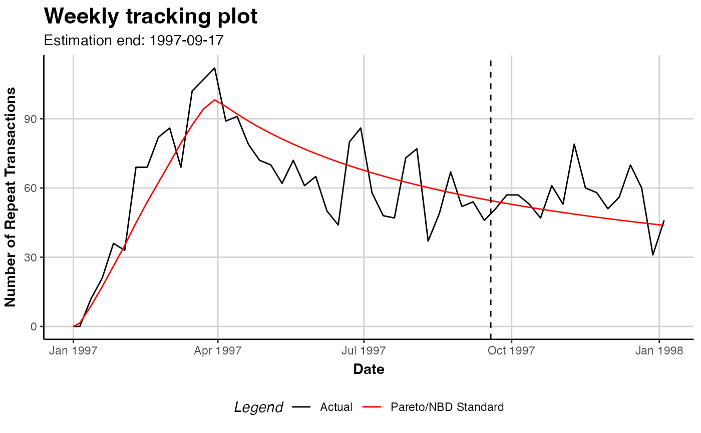
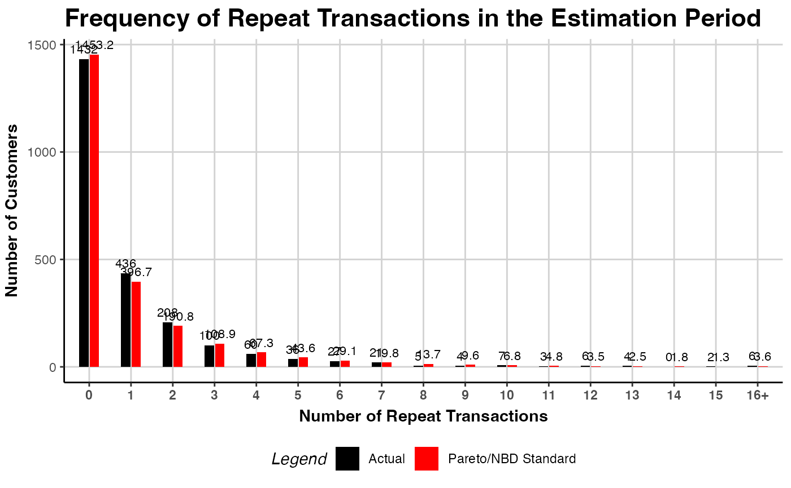
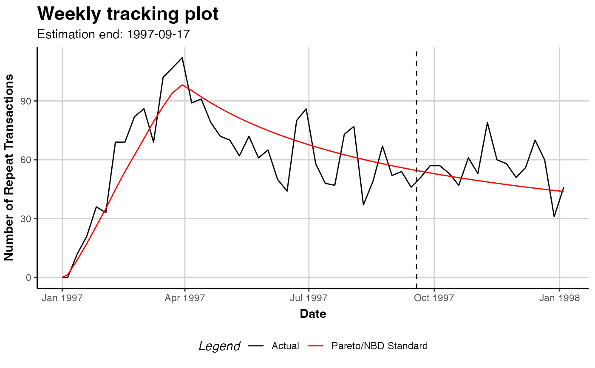
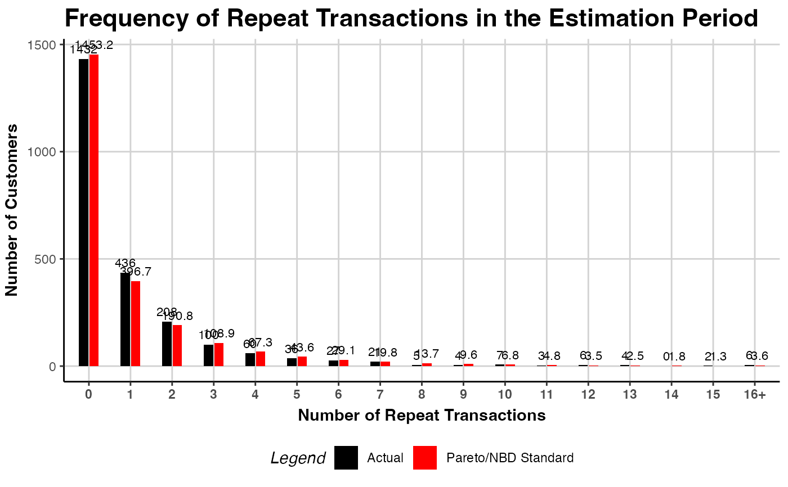

Plot Diagnostics for a Fitted Transaction Model
Source:R/f_s3generics_clvfittedtransactions_plot.R
plot.clv.fitted.transactions.RdDepending on the value of parameter which, one of the following plots will be produced.
See plot.clv.data to plot more nuanced diagnostics for the transaction data only.
For comparison, other models can be drawn into the same plot by specifying them in other.models (see examples).
Tracking Plot
Plot the actual repeat transactions and overlay it with the repeat transaction as predicted
by the fitted model. Currently, following previous literature, the in-sample unconditional
expectation is plotted in the holdout period. In the future, we might add the option to also
plot the summed CET for the holdout period as an alternative evaluation metric.
Note that only whole periods can be plotted and that the prediction end might not exactly match prediction.end.
See the Note section for more details.
PMF Plot
Plot the actual and expected number of customers which made a given number of repeat
transaction in the estimation period. The expected number is based on the PMF of the fitted model,
the probability to make exactly a given number of repeat transactions in the estimation period.
For each bin, the expected number is the sum of all customers' individual PMF value.
Note that if trans.bins is changed, label.remaining needs to be adapted as well.
# S3 method for class 'clv.fitted.transactions'
plot(
x,
which = c("tracking", "pmf"),
other.models = list(),
prediction.end = NULL,
cumulative = FALSE,
trans.bins = 0:9,
calculate.remaining = TRUE,
label.remaining = "10+",
newdata = NULL,
transactions = TRUE,
label = NULL,
plot = TRUE,
verbose = TRUE,
...
)
# S4 method for class 'clv.fitted.transactions'
plot(
x,
which = c("tracking", "pmf"),
other.models = list(),
prediction.end = NULL,
cumulative = FALSE,
trans.bins = 0:9,
calculate.remaining = TRUE,
label.remaining = "10+",
newdata = NULL,
transactions = TRUE,
label = NULL,
plot = TRUE,
verbose = TRUE,
...
)Arguments
- x
The fitted transaction model for which to produce diagnostic plots
- which
Which plot to produce, either "tracking" or "pmf". May be abbreviated but only one may be selected. Defaults to "tracking".
- other.models
List of fitted transaction models to plot. List names are used as colors, standard colors are chosen if unnamed (see examples). The
clv.dataobject stored in each model is used if nonewdatais given.- prediction.end
"tracking": Until what point in time to plot. This can be the number of periods (numeric) or a form of date/time object. See details.
- cumulative
"tracking": Whether the cumulative expected (and actual) transactions should be plotted.
- trans.bins
"pmf": Vector of positive integer numbers (>=0) indicating the number of repeat transactions (x axis) to plot. Should contain 0 in nearly all cases as it refers to repeat-transactions.
- calculate.remaining
"pmf": Whether the probability for the remaining number of transactions not in
trans.binsshould be calculated.- label.remaining
"pmf": Label for the last bar, if
calculate.remaining=TRUE.- newdata
An object of class clv.data for which the plotting should be made with the fitted model. If none or NULL is given, the plot is made for the data on which the model was fit. If
other.modelswas specified, the data in each model is replaced withnewdata.- transactions
Whether the actual observed repeat transactions should be plotted.
- label
Character vector to label each model. If NULL, the model(s) internal name is used (see examples).
- plot
Whether a plot is created or only the assembled data is returned.
- verbose
Show details about the running of the function.
- ...
Ignored
Value
An object of class ggplot from package ggplot2 is returned by default.
If plot=FALSE, the data that would have been used to create the plot is returned.
Depending on which plot was selected, this is a data.table which contains the
following columns:
For the Tracking plot:
- period.until
The timepoint that marks the end (up until and including) of the period to which the data in this row refers.
- variable
Type of variable that 'value' refers to. Either "model name" or "Actual" (if
transactions=TRUE).- value
Depending on variable either (Actual) the actual number of repeat transactions in the period that ends at
period.until, or the unconditional expectation for the period that ends onperiod.until("model name"). Actuals may beNAif no transaction was recorded.
For the PMF plot:
- num.transactions
The number of repeat transactions in the estimation period (as ordered factor).
- variable
Type of variable that 'value' refers to. Either "model name" or "Actual" (if
transactions=TRUE).- value
Depending on variable either (Actual) the actual number of customers which have the respective number of repeat transactions, or the number of customers which are expected to have the respective number of repeat transactions, as by the fitted model ("model name").
Details
prediction.end indicates until when to predict or plot and can be given as either
a point in time (of class Date, POSIXct, or character) or the number of periods.
If prediction.end is of class character, the date/time format set when creating the data object is used for parsing.
If prediction.end is the number of periods, the end of the fitting period serves as the reference point
from which periods are counted. Only full periods may be specified.
If prediction.end is omitted or NULL, it defaults to the end of the holdout period if present and to the
end of the estimation period otherwise.
The first prediction period is defined to start right after the end of the estimation period.
If for example weekly time units are used and the estimation period ends on Sunday 2019-01-01, then the first day
of the first prediction period is Monday 2019-01-02. Each prediction period includes a total of 7 days and
the first prediction period therefore will end on, and include, Sunday 2019-01-08. Subsequent prediction periods
again start on Mondays and end on Sundays.
If prediction.end indicates a timepoint on which to end, this timepoint is included in the prediction period.
The newdata argument has to be a clv data object of the exact same class as the data object
on which the model was fit. In case the model was fit with covariates, newdata needs to contain identically
named covariate data.
The use case for newdata is mainly two-fold: First, to estimate model parameters only on a
sample of the data and then use the fitted model object to predict or plot for the full data set provided through newdata.
Second, for models with dynamic covariates, to provide a clv data object with longer covariates than contained in the data
on which the model was estimated what allows to predict or plot further. When providing newdata, some models
might require additional steps that can significantly increase runtime.
Note
Because the unconditional expectation for a period is derived as the difference of the cumulative expectations calculated at the beginning and at end of the period, all timepoints for which the expectation is calculated are required to be spaced exactly 1 time unit apart.
If prediction.end does not coincide with the start of a time unit, the last timepoint
for which the expectation is calculated and plotted therefore is not prediction.end
but the start of the first time unit after prediction.end.
See also
plot.clv.fitted.spending for diagnostics of spending models
plot.clv.data for transaction diagnostics of clv.data objects
pmf for the values on which the PMF plot is based
Examples
# \donttest{
data("cdnow")
# Fit ParetoNBD model on the CDnow data
clv.cdnow <- clvdata(cdnow, time.unit="w",
estimation.split=37,
date.format="ymd")
pnbd.cdnow <- pnbd(clv.cdnow)
#> Starting estimation...
#> Estimation finished!
## TRACKING PLOT
# Plot actual repeat transaction, overlayed with the
# expected repeat transactions as by the fitted model
plot(pnbd.cdnow)
#> Plotting from 1997-01-01 until 1998-07-05.
#> Warning: A <numeric> value was passed to a Date scale.
#> ℹ The value was converted to a <Date> object.
# Plot cumulative expected transactions of only the model
plot(pnbd.cdnow, cumulative=TRUE, transactions=FALSE)
#> Plotting from 1997-01-01 until 1998-07-05.
#> Warning: A <numeric> value was passed to a Date scale.
#> ℹ The value was converted to a <Date> object.
# Plot until 2001-10-21
plot(pnbd.cdnow, prediction.end = "2001-10-21")
#> Plotting from 1997-01-01 until 2001-10-21.
#> Warning: A <numeric> value was passed to a Date scale.
#> ℹ The value was converted to a <Date> object.
 # Plot until 2001-10-21, as date
plot(pnbd.cdnow,
prediction.end = lubridate::dym("21-2001-10"))
#> Plotting from 1997-01-01 until 2001-10-21.
#> Warning: A <numeric> value was passed to a Date scale.
#> ℹ The value was converted to a <Date> object.
# Plot until 2001-10-21, as date
plot(pnbd.cdnow,
prediction.end = lubridate::dym("21-2001-10"))
#> Plotting from 1997-01-01 until 2001-10-21.
#> Warning: A <numeric> value was passed to a Date scale.
#> ℹ The value was converted to a <Date> object.
 # Plot 15 time units after end of estimation period
plot(pnbd.cdnow, prediction.end = 15)
#> Plotting from 1997-01-01 until 1998-01-04.
#> Warning: Not plotting full holdout period.
#> Warning: A <numeric> value was passed to a Date scale.
#> ℹ The value was converted to a <Date> object.

# Save the data generated for plotting
# (period, actual transactions, expected transactions)
plot.out <- plot(pnbd.cdnow, prediction.end = 15)
#> Plotting from 1997-01-01 until 1998-01-04.
#> Warning: Not plotting full holdout period.
# A ggplot object is returned that can be further tweaked
library("ggplot2")
gg.pnbd.cdnow <- plot(pnbd.cdnow)
#> Plotting from 1997-01-01 until 1998-07-05.
gg.pnbd.cdnow + ggtitle("PNBD on CDnow")
#> Warning: A <numeric> value was passed to a Date scale.
#> ℹ The value was converted to a <Date> object.
## PMF PLOT
plot(pnbd.cdnow, which="pmf")
# For transactions 0 to 15, also have
# to change label for remaining
plot(pnbd.cdnow, which="pmf", trans.bins=0:15,
label.remaining="16+")

# For transactions 0 to 15 bins, no remaining
plot(pnbd.cdnow, which="pmf", trans.bins=0:15,
calculate.remaining=FALSE)
## MODEL COMPARISON
# compare vs bgnbd
bgnbd.cdnow <- bgnbd(clv.cdnow)
#> Starting estimation...
#> Estimation finished!
ggomnbd.cdnow <- ggomnbd(clv.cdnow)
#> Starting estimation...
#> Estimation finished!
# specify colors as names of other.models
# note that ggomnbd collapses into the pnbd on this dataset
plot(pnbd.cdnow, cumulative=TRUE,
other.models=list(blue=bgnbd.cdnow, "#00ff00"=ggomnbd.cdnow))
#> Collecting data for other models...
#> Plotting from 1997-01-01 until 1998-07-05.
#> Plotting from 1997-01-01 until 1998-07-05.
#> Plotting from 1997-01-01 until 1998-07-05.
#> Warning: A <numeric> value was passed to a Date scale.
#> ℹ The value was converted to a <Date> object.
# specify names as label, using standard colors
plot(pnbd.cdnow, which="pmf",
other.models=list(bgnbd.cdnow),
label=c("Pareto/NBD", "BG/NBD"))
#> Collecting data for other models...
# }
# Plot 15 time units after end of estimation period
plot(pnbd.cdnow, prediction.end = 15)
#> Plotting from 1997-01-01 until 1998-01-04.
#> Warning: Not plotting full holdout period.
#> Warning: A <numeric> value was passed to a Date scale.
#> ℹ The value was converted to a <Date> object.

# Save the data generated for plotting
# (period, actual transactions, expected transactions)
plot.out <- plot(pnbd.cdnow, prediction.end = 15)
#> Plotting from 1997-01-01 until 1998-01-04.
#> Warning: Not plotting full holdout period.
# A ggplot object is returned that can be further tweaked
library("ggplot2")
gg.pnbd.cdnow <- plot(pnbd.cdnow)
#> Plotting from 1997-01-01 until 1998-07-05.
gg.pnbd.cdnow + ggtitle("PNBD on CDnow")
#> Warning: A <numeric> value was passed to a Date scale.
#> ℹ The value was converted to a <Date> object.
## PMF PLOT
plot(pnbd.cdnow, which="pmf")
# For transactions 0 to 15, also have
# to change label for remaining
plot(pnbd.cdnow, which="pmf", trans.bins=0:15,
label.remaining="16+")

# For transactions 0 to 15 bins, no remaining
plot(pnbd.cdnow, which="pmf", trans.bins=0:15,
calculate.remaining=FALSE)
## MODEL COMPARISON
# compare vs bgnbd
bgnbd.cdnow <- bgnbd(clv.cdnow)
#> Starting estimation...
#> Estimation finished!
ggomnbd.cdnow <- ggomnbd(clv.cdnow)
#> Starting estimation...
#> Estimation finished!
# specify colors as names of other.models
# note that ggomnbd collapses into the pnbd on this dataset
plot(pnbd.cdnow, cumulative=TRUE,
other.models=list(blue=bgnbd.cdnow, "#00ff00"=ggomnbd.cdnow))
#> Collecting data for other models...
#> Plotting from 1997-01-01 until 1998-07-05.
#> Plotting from 1997-01-01 until 1998-07-05.
#> Plotting from 1997-01-01 until 1998-07-05.
#> Warning: A <numeric> value was passed to a Date scale.
#> ℹ The value was converted to a <Date> object.
# specify names as label, using standard colors
plot(pnbd.cdnow, which="pmf",
other.models=list(bgnbd.cdnow),
label=c("Pareto/NBD", "BG/NBD"))
#> Collecting data for other models...
# }